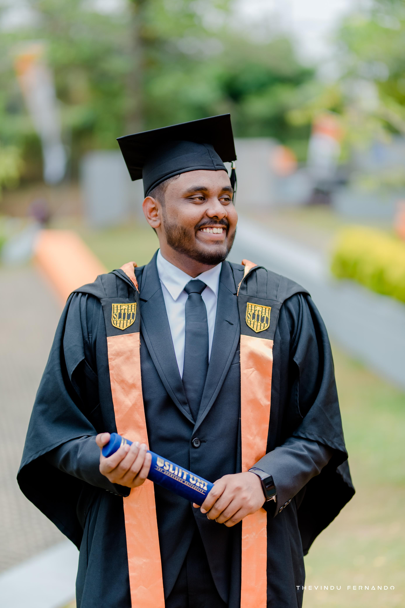
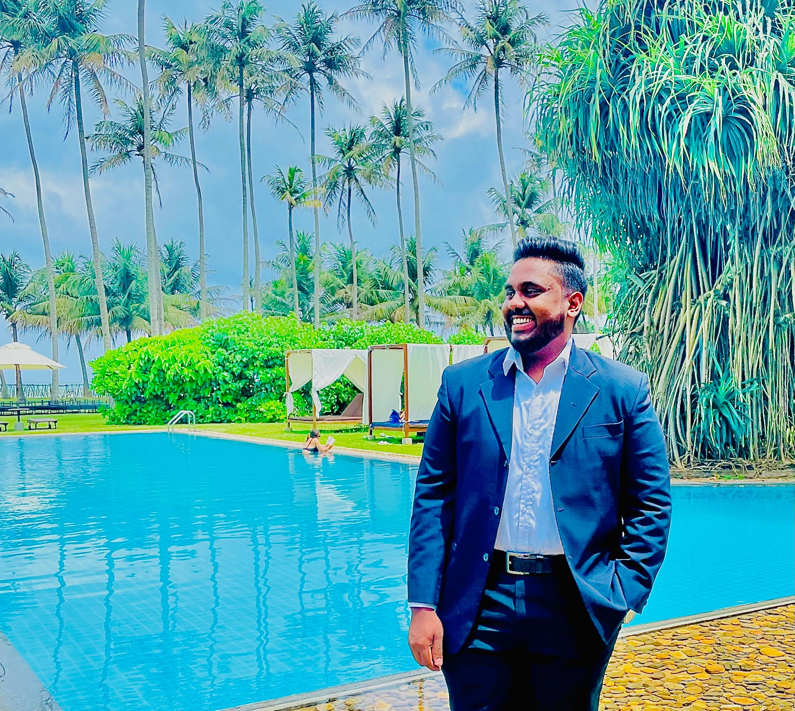

<div class="align-items-center default-container">
    <div class="col-lg-8">
        <div class="content">
            <div class="content-left">
                <h2 class="default-topic">About me.</h2>
                <p class="default-p">
                    My name is Kushan Dimantha, and I enjoy <span class="default-highlight">turning ideas into reliable,
                        scalable software solutions.</span>.
                </p>
                <p>
                    
                </p>
                <p class="default-p">
                    <span class="default-highlight">I am a Full Stack Software Engineer from Sri Lanka with over four
                    years of hands-on experience</span> building web, blockchain, mobile, desktop,
                    and Linux-based applications. I am fluent in English and a native Sinhala speaker. My work spans the
                    full software lifecycle—from ideation and system design to development, deployment, and long-term
                    maintenance.
                </p>
                <p class="default-p">
                    <span class="default-highlight">My journey into software development</span> began during my academic years, where problem-solving and
                    logical thinking naturally drew me toward programming. This curiosity led me to pursue a <span class="default-highlight">BSc (Hons)
                    in Information Technology specializing in Software Engineering at SLIIT,</span> where I strengthened my
                    foundations in computer science, software architecture, and real-world application development. As
                    part of my academic journey,<span class="default-highlight">I conducted research on real-time emotion detection and mental health
                    monitoring for remote employees, which was later published in an international journal—an experience
                    that deepened my appreciation for data-driven and impactful technology solutions.</span>
                </p>
                <p class="default-p">
                    <span class="default-highlight">Fast-forward to today</span>, I have had the opportunity to work with talented engineers and
                    cross-functional teams across multiple organizations. <span class="default-highlight">My professional experience includes building
                    secure full-stack web applications, RESTful APIs, real-time socket-based systems, mobile applications, npm packages , chrome extensions, Dapps, and Linux desktop
                    applications using technologies such as React, Next.js, Vite, Node.js, NestJS, Go, Flutter, and
                    Electron.js. I have also worked extensively with databases like MongoDB, PostgreSQL, MySQL, Redis,
                    as well as embedded storage solutions such as Pebble DB and Badger DB.</span>
                </p>
                <p class="default-p">
                    <span class="default-highlight">Beyond coding</span>, I have gained valuable experience in system design, secure authentication (JWT,
                    encryption), and DevOps practices. <span class="default-highlight">I have worked with Docker, Kubernetes, CI/CD pipelines, AWS,
                    DigitalOcean, and GitHub Actions to ensure reliable and efficient software delivery.</span> Leading and
                    mentoring junior engineers has helped me develop strong communication and leadership skills while
                    maintaining clean code practices and scalable architectures.
                </p>
                <p class="default-p">
                    <span class="default-highlight">I strongly believe that DevOps and automation play a crucial role in modern software development.</span>
                    Streamlined workflows, efficient CI/CD pipelines, and reliable infrastructure directly contribute to
                    higher-quality software and better collaboration between teams. This mindset has shaped how I
                    approach both development and deployment—always aiming for performance, security, and
                    maintainability.
                </p>
                <p>
                    
                </p>
                <p class="default-p">
                    <span class="default-highlight">What truly drives me</span>, however, is curiosity. My passion for technology goes far beyond day-to-day
                    work. I genuinely enjoy debugging complex issues, exploring new frameworks, reading documentation,
                    and experimenting with emerging tools. Whether it’s building a side project, developing an NPM
                    package, or experimenting with a new stack, I am motivated by the challenge of learning and
                    improving continuously. I believe this curiosity not only sharpens my technical skills but also
                    helps foster a positive and collaborative team culture.
                </p>
                <p class="default-p">
                    <span class="default-highlight">On a personal note,</span> I value purpose-driven work and community experiences. I enjoy documentaries,
                    science fiction and suspense movies, instrumental music, Linux environments, mathematics,
                    and meaningful discussions around philosophy and exploration. When I travel, I like to document my
                    experiences so I can revisit and reflect on them later.
                </p>
                <p>
                    
                </p>
                <p class="default-p">
                    <span class="default-highlight">I am continuously learning and evolving as an engineer.</span> My goal is to build efficient, secure, and
                    user-friendly software that creates real value whether through front-end experiences, backend
                    systems, or full-stack applications.
                </p>
                <p class="default-p">
                    <span class="default-highlight">I am continuously learning and adapting to new technologies and methodologies.
                    My goal is to create efficient, scalable, and user-friendly software solutions that make a difference</span>. Whether it's front-end development, back-end services, or
                    full-stack applications,
                    I am passionate about every aspect of software development.
                </p>
                <p class="default-p">
                    <span class="default-highlight">To close with a thought I strongly resonate with:</span>
                </p>
                <p class="default-p">
                    Humankind is driven by exploration and innovation. As a software engineer, I take pride in
                    contributing to that ongoing journey that helps to solve problems.
                </p>
            </div>
            <div class="content">
                <div class="content-left">
                    <h2 class="default-topic">Reach out.</h2>
                    <p class="default-p">
                        Follow me on social media and <span class="default-highlight">reach out to arrange a
                            meeting</span>.
                        I would be happy to discuss how my <span class="default-highlight">problem-solving skills</span>
                        can help address the challenges you are facing.
                    </p>
                    <button>
                        <a routerLink="/contact" class="a-green">
                            > Contact me
                        </a>
                    </button>
                </div>
            </div>
        </div>
    </div>
</div>